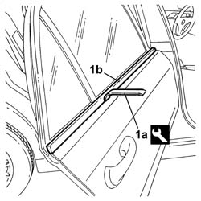

7010D26 GLASS SCRAPER (external) (one) left or right for rear side door DESCENDING WINDOW GLASS - R.R.
- Path
- Procedures > 70 FITTINGS > 7010 passenger compartment rear side doors > 7010D REAR SIDE DOOR WINDOWS > 7010D26 GLASS SCRAPER (external) (one) left or right for rear side door DESCENDING WINDOW GLASS - R.R.
- Kind
- repair procedure (removal / refitting; the operation number is the code)
- Applies to
- all engines; all production periods
- Interactive page
- https://sloeber94.github.io/elrnDB-lThss/en/#/111252
Applies to: all engines; all production periods
 Removing
Removing
 Refitting
Refitting1. Release the outer glass scraper (1b) using the tool (1a) and remove it.
 | Description | Code | Function |
|---|---|---|---|
1a | Removing tool | 1.878.086.000 | Removing rear side door outer glass scraper trim |

Applies to: all engines; all production periods
Refitting
Removing- Fit the outer glass scraper in the housing, checking that it adheres perfectly to the bodyshell profile.
Topics that link to this page (4)
- 7010D14 Rear side door DESCENDING WINDOW GLASS (one), left or right - R.R. with door panel (and mount frame) removed
- 7010D15 Rear side door DESCENDING WINDOW GLASS (one), left or right - R.R.
- 7010D16 Rear side door fixed window glass (one), left or right - R.R.
- 7010D18 Rear side door DESCENDING WINDOW GLASS CHANNEL (one), left or right - R.R.